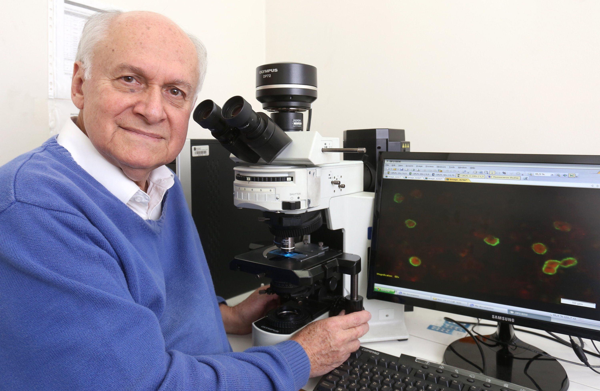
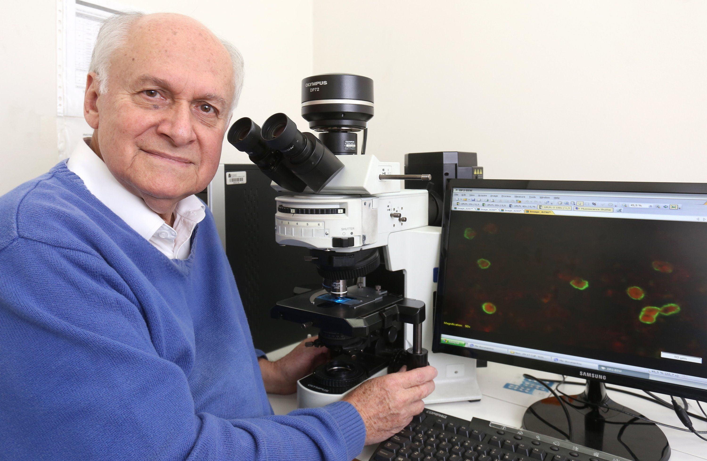

Escoga un territorio diverso, rico en recursos hídricos, minerales y biológicos, con climas variados y dos océanos. Inserte el territorio en una olla a presión, a fuego alto, por apróximadamente 150 años, tenga cuidado de no meterle liberalismo ni conservatismo a la olla, pues esta podría explotar.
Libere la presión de la olla y destápela, mezcle lentamente a medida que añade la taza de creatividad de Botero. Cuando tenga una mezcla homogénea, añada los tres pedazos del espíritu emprendedor de Arturo Calle.
En un recipiente adicional añada el talento de Nairo, la persistencia del profesor Moncayo y la empatía de Shakira cuando la mezcla esté homogenea, agregue esto a la base inicial y deje a fuego lento hasta que hierva.
Prepare el aderezo mientras espera a que la mezca hierva. Agrege la resiliencia de Daniela Álvarez y revuelva con cuidado, bata el liderazgo de Francia Márquez e incorpórelo a la mezcla. Luego, derrítala ligeramente la innovación de Patarroyo y agréguela a la base. Sirva como acompañamiento junto con el plato principal.
Una vez la mezcla principal haya hervido, deje reposar por 10 años. Posteriormente adicionar 1 pizca de entusiasmo de Jorge Varón para así asegurar que la mezcla tenga la consistencia deseada.
Para emplatar adecuadamente nuestra receta, es necesario que se sirva a temperatura ambiente, en la vida real y aplicarlo constantemente en nuestro día a día. Sirva preferiblemente acompañado del cuidado de los médicos, con unos campesinos dedicados y de profesores apasionados.